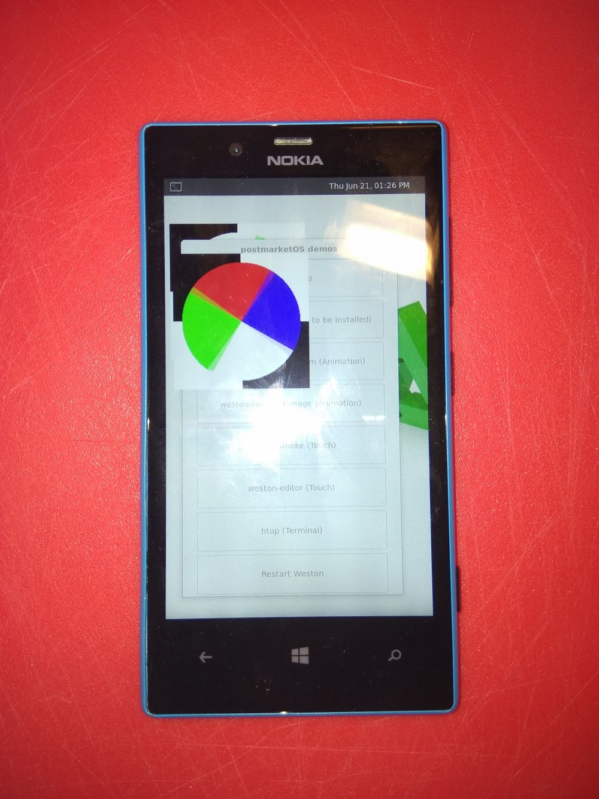

Nokia Lumia 720 (nokia-zeal)
Jump to navigation
Jump to search
| This device is still running on armhf, although the processor supports armv7. If you own it, change it and test it that way. |
|
 Weston running on Lumia 720 | |
| Manufacturer | Nokia |
|---|---|
| Name | Lumia 720 |
| Codename | nokia-rm885 |
| Released | 2013 |
| Category | testing |
| Original software | Windows Phone |
| Original version | 8 |
| Extended version | 8.1 |
| Hardware | |
| Chipset | Qualcomm Snapdragon S4 Plus (MSM8227) |
| CPU | Dual-core 1Ghz |
| GPU | Adreno 305 |
| Display | 480 x 800 IPS |
| Storage | 8 GB |
| Memory | 512 MB |
| Architecture | armv7 |
{kind=link}
| USB Networking |
Works
|
|---|---|
| Flashing |
Works
|
| Touchscreen |
Partial
|
| Display |
Works
|
| WiFi | |
| FDE | |
| Mainline | |
| Battery | |
| 3D Acceleration | |
| Audio | |
| Bluetooth | |
| Camera | |
| GPS | |
| Mobile data | |
| SMS | |
| Calls | |
| USB OTG | |
| NFC | |
| Accelerometer | |
|---|---|
| Magnetometer | |
| Ambient Light | |
| Proximity | |
| Hall Effect | |
| Barometer | |
| Power Sensor | |
| Camera Flash | |
|---|---|
| Keyboard | |
| Touchpad | |
| USB-A | |
| HDMI/DP | |
| Ir TX | |
| Ir RX | |
| Stylus | |
| Haptics | |
| Ethernet | |
| FOSS bootloader | |
Basic info
Additional info
- Possible emmc corruption when flashing? From Android4Lumia page:
My phone has Samsung eMMC, can I still use this? You can, but be aware, that those eMMCs are more probable to die unexpectedly than Hynix or Toshiba ones.
. Files are randomly corrupted on my device as well. -
Booting from SD card failed as the files there also seems to become corrupted.2GB Kingston seems to work without problems - X crashes:
[ 118.028] (EE) Segmentation fault at address 0x4
Unlocking / installing bootloader
Bootloader is unlocked with a open source windows application, WP Internals. Windows Device Recovery Tool (thor2.exe) is also needed. Here is a video describing how to backup the phone, install littlekernel bootloader, and finally installing twrp recovery and lineageos. The device can be flashed with normal fastboot application after this point.
Key combinations with original bootloader
TBD
Key combinations with littlekernel bootloader
- Recovery: volume up (phone needs to be repartitioned, and recovery must be flashed)
- Fastboot: volume down
- Mass Storage mode / QHSUSB_DLOAD: both volume buttons
Installation
Setup chroot. Select nokia-rm885 as device.
pmbootstrap init
Build rootfs
pmbootstrap build device-nokia-rm885
Build kernel
pmbootstrap build linux-nokia-rm885
Flash rootfs (Note, this will install rootfs to system partition. You can optionally try to install to userdata partition with --partition userdata argument. In that case you should probably erase system partition with "sudo fastboot erase system")
pmbootstrap flasher flash_rootfs
Flash kernel
pmbootstrap flasher flash_kernel
Run kernel (or you can just restart phone manually)
pmbootstrap flasher boot
Tips & tricks
- Depending on current mode the phone will not restart if the cable is plugged in. Unplug the usb cable and hold volume down + power for 30s. After that, release volume down and then power.
- Installing from recovery with sideload creates some kind of bootloop with blinking backlight.
Community Info
postmarketOS users that own the device
- Deathmist (Notes: Running last official WP 8.1 build, mostly unused sitting in a drawer)
Contributors
- magnusgulin